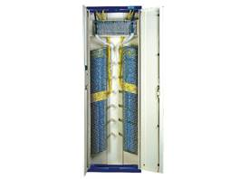

Fiber Optic Splice Cabinet GPX910-R Series

Features
* Modular design with regular octagon splice tray for fiber storage, provides flexibility in assigning capacity
* Enclosed sheet metal shelves
* Reasonable cable fixed point
* Suitable for universal fiber splice sleeves
Ordering Guide
NO. |
Type |
Dimension (mm) H*W*D |
Max Capacity (Fiber count) |
1 |
GPX910-R1a |
2600x840x300 |
2016 |
2 |
GPX910-R2a |
2200x840x300 |
1728 |